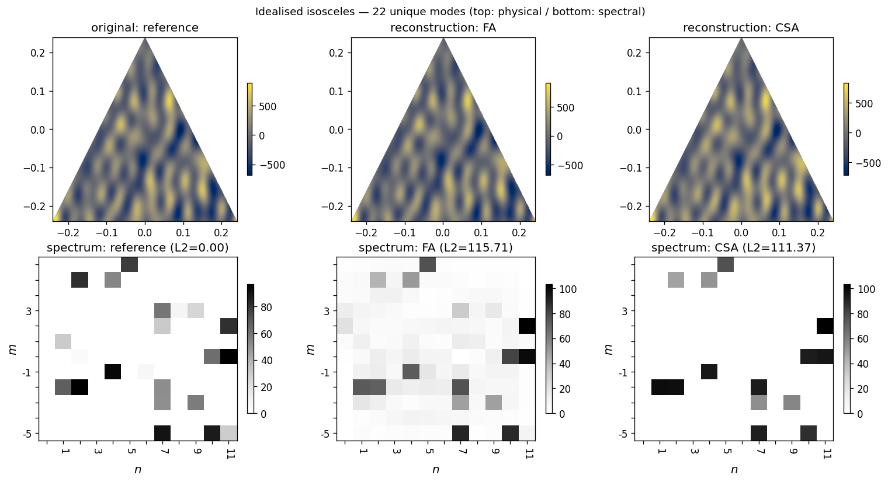

Tutorial: Idealised isosceles experiment¶
This walkthrough follows the canonical idealised CSA experiment in
runs/idealised_isosceles.py. It generates a synthetic terrain whose
spectrum is known a priori, then runs four ways of recovering that
spectrum from the (masked) topography:
a pure least-squares Fourier fit (pLSFF), unregularised — kept for comparison with the JAMES 2024 baseline;
a regularised LSFF (regLSFF);
the optimal Constrained Spectral Approximation (optCSA) with the known mode count;
a sub-optimal CSA (subCSA) that’s told to recover fewer modes than the terrain actually has.
Running the script as-is reproduces all four spectra plus the reference
in a single call. After pip install -e . it’s one command:
pycsa-idealised
The script is deterministic (np.random.seed(777)) so the numerical
output is the same on every run, modulo cross-LAPACK drift in pLSFF.
Step 1 — Generate a synthetic terrain¶
The terrain is built from a sum of cosines and sines on a regular
(lon, lat) mesh inside an isosceles triangle cell. The seeded
generator picks 22 unique (k, l) mode coordinates and per-mode
amplitudes Ak:
pts, nk, nl, Ak, Al, sck, _scl = _generate_terrain(seed=777)
# pts: array of 22 unique (k, l) wavenumber pairs
# Ak: per-mode amplitudes in [0, 100)
# sck: 0 → cosine basis, 1 → sine basis
These determine the reference spectrum freqs_ref directly — the
spectrum the four estimators below are trying to recover.
Step 2 — Build the cell + paint topography¶
pycsa.core.utils.isosceles() returns the vertex indices of an
isosceles triangle in the underlying meshgrid; the cell is masked to
that triangle:
grid = var.grid()
cell = var.topo_cell()
vid = utils.isosceles(grid, cell)
lat_v, lon_v = grid.clat_vertices[vid], grid.clon_vertices[vid]
cell.gen_mgrids()
# paint the sum of basis functions
cell.topo = sum(Ak[i] * basis(nk[i], nl[i], ...) for i in range(22))
triangle = utils.gen_triangle(lon_v, lat_v)
cell.get_masked(triangle=triangle)
See pycsa.data.cell.topo_cell for the cell container and
pycsa.core.utils.gen_triangle() for the triangle mask.
Step 3 — Pure LSFF (broken, but informative)¶
The unregularised least-squares fit uses every wavenumber in the spectrum and over-fits dramatically:
pure_lsff = interface.get_pmf(nhi=12, nhj=12, U=1.0, V=1.0)
freqs_pLSFF, _, _ = pure_lsff.sappx(cell, lmbda=0.0, iter_solve=False)
L2 error against the reference is ≈164,000 — pLSFF’s amplitudes blow
up because the design matrix is rank-deficient on the triangle support.
This is the failure mode that motivates regularisation and mode
selection.
Note
pLSFF is the only experiment whose absolute amplitudes drift
across LAPACK builds (the reproducibility suite uses rtol=1e-2
for the four pLSFF-affected variables for this reason). The
regularised methods below are bit-identical across platforms.
Step 4 — Regularised LSFF¶
A small Tikhonov term λ tames the over-fit:
reg_lsff = interface.get_pmf(nhi=12, nhj=12, U=1.0, V=1.0)
freqs_regLSFF, _, _ = reg_lsff.sappx(cell, lmbda=8e-5, iter_solve=False)
L2 error drops to ≈115. The spectrum is now a plausible
approximation of the reference, but it still has energy spread across
many wavenumbers.
Step 5 — Constrained spectral approximation¶
CSA is a two-step procedure:
A first-guess regularised LSFF identifies the top-N wavenumbers by amplitude.
A second LSFF is run constrained to those wavenumbers only.
# First guess: regularised LSFF
first_guess = interface.get_pmf(nhi=12, nhj=12, U=1.0, V=1.0)
freqs_fg, _, _ = first_guess.sappx(cell, lmbda=1e-1, iter_solve=False)
# Pick top N modes
k_idxs, l_idxs = top_n_indices(freqs_fg, n=22)
# Constrained second LSFF
second_guess = interface.get_pmf(nhi=12, nhj=12, U=1.0, V=1.0)
second_guess.fobj.set_kls(k_idxs, l_idxs, recompute_nhij=False)
freqs_optCSA, _, _ = second_guess.sappx(
cell, lmbda=1e-6, updt_analysis=True, iter_solve=False
)
With N = 22 (matching the terrain’s known mode count), L2 error
falls to ≈86. With N = 14 (fewer modes than the terrain has),
error rises to ≈111 — the algorithm gracefully degrades when the
mode budget is insufficient.
See pycsa.wrappers.interface.get_pmf for the sappx /
set_kls API.
Step 6 — Compare¶
The script renders a figure showing the original masked topography, the reconstructed topography from regLSFF and subCSA, and the reference / regLSFF / subCSA spectra:
{kind=link}

Fig. 2 Top row: original masked topography (reference), regLSFF reconstruction, sub-optimal CSA reconstruction (N=14). Bottom row: the corresponding spectra. The reference column shows the 22 known modes; regLSFF spreads energy across many wavenumbers; subCSA recovers a sharp subset.¶
The L2 errors against the reference for the default seed:
reference : 0.00
pLSFF : 163750.14 (broken — see Step 3)
regLSFF : 115.71
optCSA : 85.68
subCSA : 111.37
pLSFF_quad : 163750.14
Reproducibility: the four CSA-family rows are bit-identical across
platforms. pLSFF drifts sub-1% across LAPACK builds (so its exact value
here will differ slightly on your machine) and is pinned at rtol=1e-2
in the reproducibility suite.
Running it yourself¶
Three equivalent invocations after pip install -e .:
pycsa-idealised # the console script
python -m runs.idealised_isosceles # module-runner
python ./runs/idealised_isosceles.py # direct
All three accept --seed and --n-modes flags. With the defaults
(seed=777, n_modes=14) the numerical summary above is what you
get on stdout.
Where to go next¶
Real data, laptop-sized:
examples/icon_regional_minimal.pyruns the full pipeline on a real ICON cell (Aleutians, ~52°N) using a bundled MERIT slice. ~10 s end-to-end, no manual data setup.Real data with ocean-aware masking: the Showcase: ETOPO over the central Andes runs the pipeline on a central-Andes cell using bundled ETOPO data and the production diagnostic plot — the same data path and masking as the global HPC run, on one cell.
Production HPC runs: see HPC reproducibility guide for the global ICON+ETOPO pipeline (
runs/icon_etopo_global.py) — SLURM submission, memory batching, restart story, and tile-cache lifecycle.Gating numerical refactors: the reproducibility suite at
tests/reproducibility/pins the output of three canonical cases (idealised, regional MERIT on the Aleutians, ETOPO single-cell at the south pole) and gates every refactor PR.